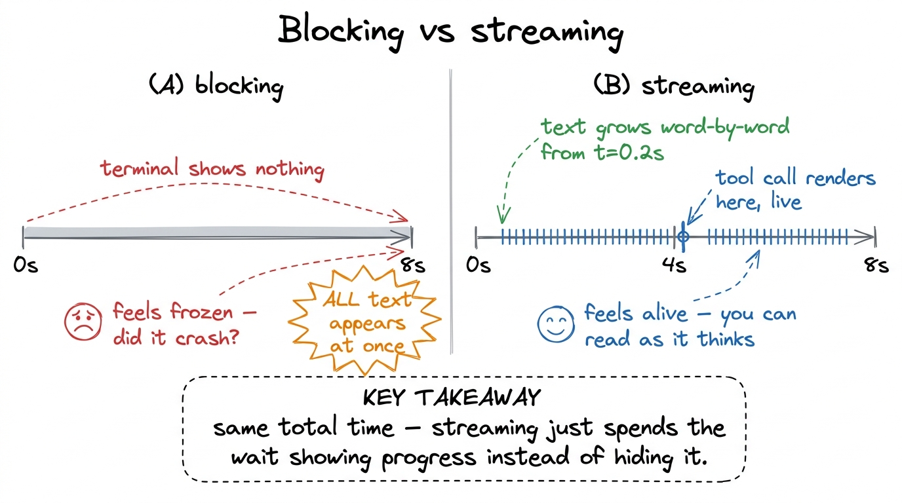
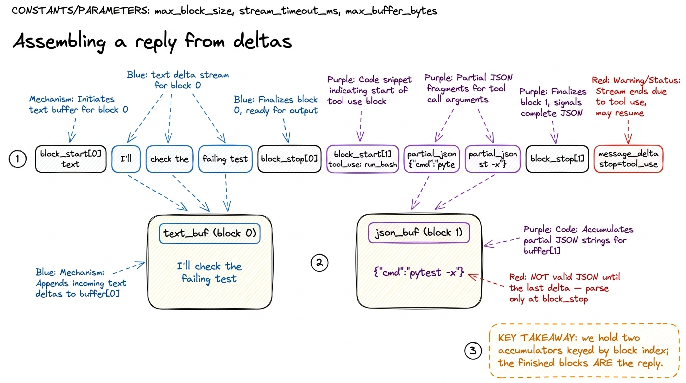
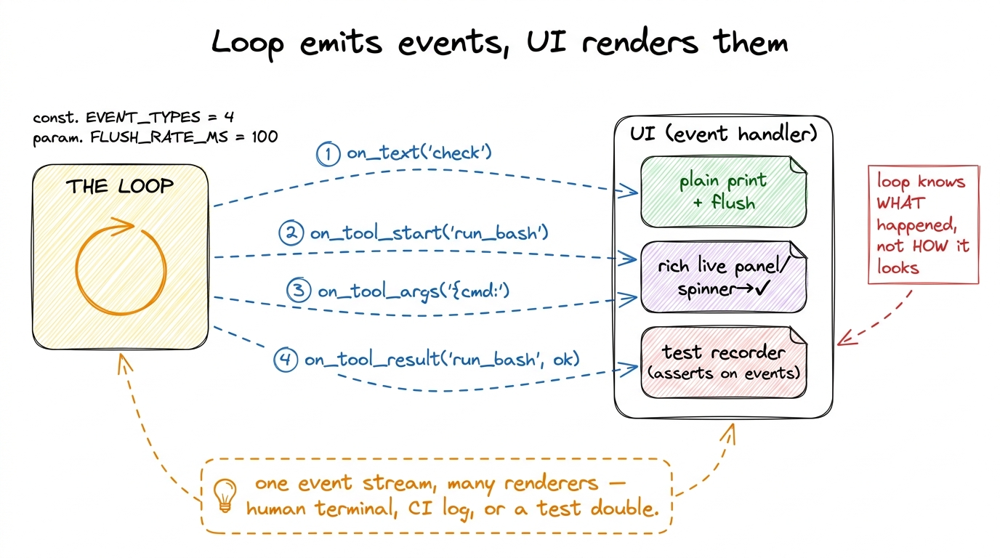
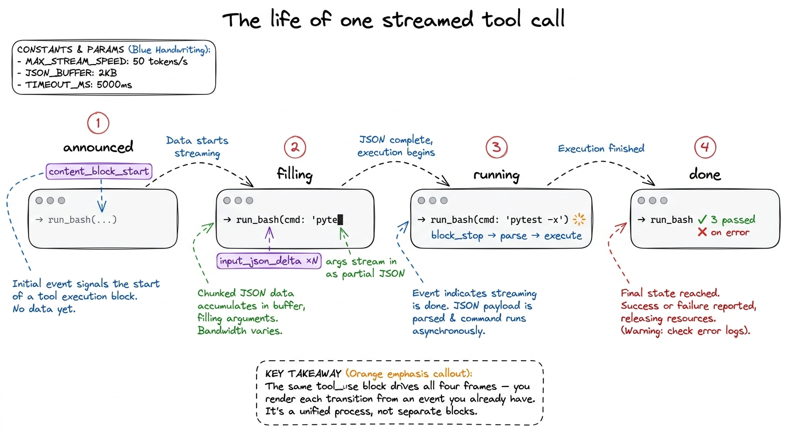

Streaming responses into a terminal
The loop we built in your first bare harness has one property that feels fine in a demo and terrible in real use: it is silent. You type a request, hit enter, and then nothing happens. No cursor, no text, no sign of life — just a process holding its breath while the model composes an entire reply somewhere far away. Ten seconds later the whole answer lands at once, fully formed. For a one-line question that is merely awkward. For a coding agent that thinks for thirty seconds and then runs a run_bash you didn't expect, that silence is the difference between a tool you trust and a tool you kill with Ctrl-C because you assumed it hung.
This chapter is about breaking the silence. We are going to change one thing — when the harness learns what the model is saying — and watch it ripple through the loop and into the terminal UI. The model's output stops being a package that arrives and becomes a stream that unspools, token by token, tool call by tool call, while you watch.
Why blocking feels dead, and streaming feels alive
Start with the plain fact of the numbers. A model generates tokens at some rate — call it fifty a second on a good day — and a substantial coding reply might be four hundred tokens of reasoning before it even decides to touch a file. That is eight seconds of the model already producing your answer during which the blocking harness shows you absolutely nothing, because it is waiting for the very last token before it prints the first.

figure rendering · Blocking and streaming take the same wall-clock time. Streaming spendsHere is the part people miss: streaming does not make the model faster. The last token arrives at the same moment either way. What changes is that the first token reaches the human almost immediately — this is time-to-first-token, and it is the number that governs whether your agent feels responsive. A tool that starts printing in 200 milliseconds feels alive even if it takes ten seconds to finish. A tool that prints nothing for ten seconds and then dumps everything feels broken even though it did the identical work. Perceived responsiveness is a UX property, not a throughput property, and streaming is how you buy it for nearly free.1 This is the same reason Claude Code, Cursor, and pi all stream by default — and why a REPL that streams over an SSH link with 300ms latency still feels snappier than a blocking one running locally. The human is reading at the model's pace, not waiting for a batch.
There is a trust dimension too, and it matters more for agents than for chatbots. When the model streams its reasoning before it acts, you get a running window into what it is about to do. You see "I'll check the failing test first, then look at the assertion" arrive word by word, and you have a second or two to hit Ctrl-C before it does something you didn't want. A blocking harness gives you the reasoning and the action in the same instant — no window, no veto.
What the API actually sends
To stream, we stop asking the client for the finished message and instead ask it for a sequence of events. Each event is a small fragment: a signal that a content block is starting, a delta carrying a few characters of text, a signal that a block ended, and so on. The full reply is never handed to us — we assemble it by folding the deltas together ourselves.
Concretely, an Anthropic streaming response is a sequence like this:2 The exact event names here — content_block_start, content_block_delta, message_delta — are Anthropic's. OpenAI's stream calls them choices[].delta chunks; the shape differs but the idea is identical. We keep this behind the model client so the loop never sees provider-specific event names.
message_start → an empty message shell, role="assistant"
content_block_start (index 0) → a text block is beginning
content_block_delta (index 0) → "I'll"
content_block_delta (index 0) → " check the"
content_block_delta (index 0) → " failing test"
content_block_stop (index 0) → that text block is done
content_block_start (index 1) → a tool_use block: name="run_bash", id="tu_01…"
content_block_delta (index 1) → partial_json: '{"cmd": "pyte'
content_block_delta (index 1) → partial_json: 'st -x"}'
content_block_stop (index 1) → the tool call is fully specified
message_delta → stop_reason="tool_use"
message_stop → the turn is overTwo things in that trace are worth pausing on. First, a single reply can contain multiple content blocks — here a text block and a tool-use block — and the index on each event tells you which block a delta belongs to. Second, tool arguments stream as partial JSON: run_bash's {"cmd": "pytest -x"} arrives in fragments that are not valid JSON until the last one lands. You cannot json.loads a half-sent argument, which is the central gotcha of streaming tool calls and the reason we accumulate before we parse.

figure rendering · The stream is folded into per-block accumulators. Text deltas append tThe loop, now streaming
Let me rewrite the one function that changes. In the blocking harness we had reply = call_model(...) returning a whole message. Now call_model yields events, and we build the reply as they arrive — printing text the instant it shows up, and quietly buffering tool-call JSON until it is complete.
def call_model_stream(messages, tools):
# yields raw events; the with-block also builds a final message for us
with client.messages.stream(
model="claude-sonnet-4-5",
max_tokens=4096,
system=SYSTEM_PROMPT,
messages=messages,
tools=tools,
) as stream:
for event in stream:
yield event
# a sentinel dict so the caller can't confuse it with a real SDK event
yield {"__final__": stream.get_final_message()} # the assembled replydef run_agent(user_request, ui):
messages = [{"role": "user", "content": user_request}]
while True:
reply = None
for event in call_model_stream(messages, TOOLS):
if isinstance(event, dict): # sentinel: fully assembled
reply = event["__final__"]
elif event.type == "content_block_start" and \
event.content_block.type == "tool_use":
ui.on_tool_start(event.content_block.name) # 1. show the call, live
elif event.type == "content_block_delta":
d = event.delta
if d.type == "text_delta":
ui.on_text(d.text) # 2. print tokens as they land
elif d.type == "input_json_delta":
ui.on_tool_args(d.partial_json) # 3. optional: show args filling in
messages.append({"role": "assistant", "content": reply.content})
if reply.stop_reason != "tool_use": # 4. no tool → we're done
return
# run the tools exactly as before — the args are now complete, valid JSON
results = [run_tool(b.name, b.input) for b in reply.content
if b.type == "tool_use"]
messages.append({"role": "user", "content": to_tool_results(results, reply)})Notice how little of the loop actually changed. The stop condition is still reply.stop_reason != "tool_use"; we still append the assistant message, still run the tools, still feed results back. Streaming did not touch the agent loop's logic at all — it changed only how we obtain the reply and when the UI hears about it. That separation is the whole trick: the model's helper (stream.get_final_message()) folds the deltas back into exactly the message object the blocking loop expected, so the loop below stays honest and simple while the events fan out to the UI above.3 Letting the SDK assemble the final message is not laziness — it is correctness. Reconstructing multi-block messages with interleaved text and tool calls by hand is fiddly and a classic source of "the tool ran with truncated arguments" bugs. Yield the events for the UI, but trust the helper for the object you feed back into the loop.
The UI is just an event handler
Look at what run_agent calls: ui.on_text, ui.on_tool_start, ui.on_tool_args. We never told the loop how to draw anything. We told it what happened, and handed the drawing to a separate object. This is the second big idea of the chapter: a streaming terminal UI is an event-driven renderer. The loop emits semantic events — "some text arrived," "a tool call is starting" — and the UI decides how to make each one visible.
Why this separation earns its keep: the same event stream can drive a plain print, a rich live-updating terminal panel, a spinner that flips to a checkmark, or a test harness that just records events and asserts on them. Keeping what happened apart from how it looks is what lets one loop serve a human at a terminal and a script in CI without branching logic tangled through it.
A minimal terminal renderer is genuinely this small:
class TerminalUI:
def on_text(self, chunk):
print(chunk, end="", flush=True) # flush is the whole point
def on_tool_start(self, name):
print(f"\n\033[2m→ {name}(…)\033[0m", flush=True) # dim, live
def on_tool_result(self, name, ok):
mark = "✓" if ok else "✗"
print(f"\033[2m {mark} {name}\033[0m", flush=True)The one non-obvious line is flush=True. By default a terminal buffers stdout and only writes when it hits a newline — which would silently re-block your beautifully streamed tokens into line-sized chunks. Flushing on every delta is what makes the text actually appear character by character. It is a small thing that people forget, and forgetting it makes streaming look exactly like blocking.

figure rendering · The loop emits semantic events; a swappable UI object decides how to rRendering a tool call while it is still arriving
Text is the easy case — you print each chunk and move on. Tool calls are where a streaming UI shows its craft, because a tool call is meaningful before it is complete. The moment the content_block_start for a run_bash arrives, you already know the tool's name even though its arguments haven't finished streaming. So you can render → run_bash(…) immediately, then fill in the command as the input_json_delta fragments accumulate, then flip the line to a done state once the tool actually runs.
That progression — announced → filling → running → done — is exactly the little dance you see in Claude Code and pi when a tool fires: the name appears dim, the arguments materialize, a spinner spins, and it resolves to a checkmark or a red cross. It is not decoration. It is the harness narrating its own state so the human is never surprised, and it is built entirely out of the events we are already receiving.

figure rendering · One tool call rendered across four states — announced, filling, runninWhat streaming still doesn't solve
Be honest about the seams. Streaming makes the agent feel alive; it does not make it safe. Watching a run_bash argument fill in with rm -rf in real time is more terrifying, not less — you see the danger arrive but the loop above still executes it the instant the block closes. The window streaming gives you is a courtesy, not a guardrail; the real gate belongs in the tool layer, which is exactly why permission gates come next. A well-built harness pauses between the fully-assembled tool call and its execution to ask, and streaming is what makes that pause feel like a natural beat rather than a freeze.
There are rougher edges too. A stream can drop mid-flight — the connection dies on content_block_delta number forty — and now you hold a half-assembled message with an unclosed tool call; deciding whether to retry the turn or replay from a checkpoint is a durability question, not a rendering one. And a human interrupt (Ctrl-C) has to unwind cleanly: stop consuming events, discard the partial reply, and leave the message array in a valid state so the next turn isn't poisoned by a dangling assistant block.4 Real harnesses treat interrupt-during-stream as a first-class path: on Ctrl-C they close the stream, drop the in-flight assistant message entirely, and append a synthetic user note like "[interrupted]" so the model knows the last thought never landed. Getting this wrong is how you get an agent that "remembers" doing something it never finished.
None of that diminishes what we gained. For the price of trading one return value for a loop over events plus a flush=True, the harness went from a frozen box to something that reads like a colleague thinking out loud. It reasons where you can see it, announces every action before it takes it, and never leaves you wondering whether it died. That is the responsiveness and the trust that streaming buys — and with it, our Layer 1 loop finally feels like the agent it already was.
Next we give that agent hands it can't hurt you with: tool schemas as contracts, and then the permission gates that stand between a streamed tool call and its execution.